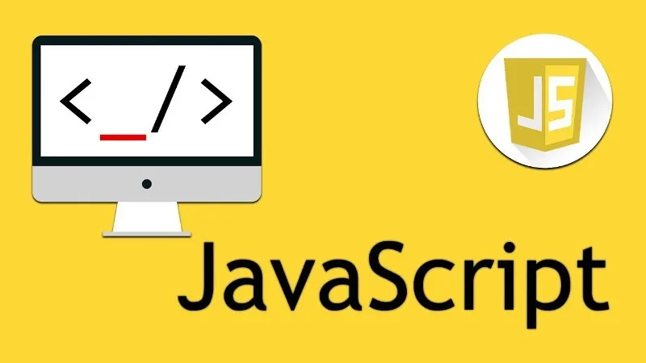

Python
Nas aulas de Python iremos aprender a linguagem desde o básico até suas partes mais avançadas, com o intuito de você realmente aprender e não precisar decorar nada
Java
Java é uma linguagem de programação de uso geral, aplicada principalmente para desenvolvimento web e desenvolvimento de software.
C#
O C# é uma linguagem de programação muito popular, sendo uma excelente escolha devido a sua baixa curva de aprendizado e simplicidade mas sem deixar de ser uma linguagem poderosa. Além disso, ela é a linguagem principal do .NET Framework, o framework para desenvolvimento da Microsoft.
R
R é uma linguagem de programação estatística e gráfica que vem se especializando na manipulação, análise e visualização de dados, sendo atualmente considerada uma das melhores ferramentas para essa finalidade. A linguagem ainda possui como diferencial a facilidade no aprendizado, mesmo para aqueles que nunca tiveram contato anterior com programação.